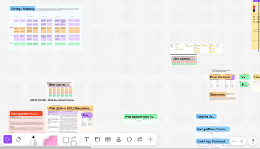
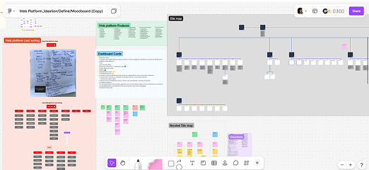
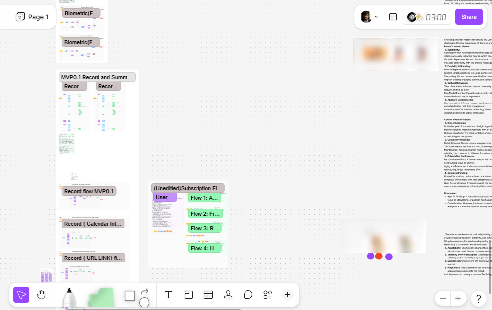
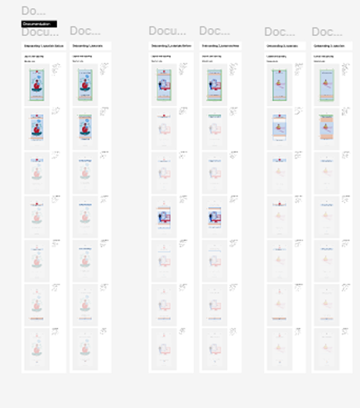
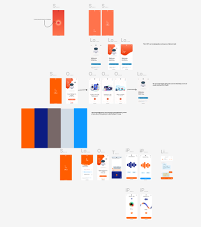

Lillup
Cross-Platform AI Learning App
More intuitive scheduling, integrated Voice-to-Text features, improved UI structures overarching all flows. We are modernizing their current setup by introducing an onboarding pathway tailored to various personas, delivering an accessible UI system for all.
The Mission
This client is an educational platform offering grading, file sharing and communication. This project focused on structural layout constraints. Using the material design language we're designing an onboarding pathway customized for different user roles and streamlining the learning experience. We had the authority to establish the core learning interface and standardize components to maintain accessibility benchmarks.


The 48-Participant Discovery
- Navigation Overload: Inbound operations documented multiple drop-offs connected to main menu interactions. The testing focused us to merge nested list components into a progressive platform navigation format utilizing bottom sheet components.
- Audience Multi-segmentation: Teachers, administrators, and students act differently across the platform. Primary user paths needed to merge into a single scalable infrastructure to avoid fragmentation and ensure consistent component states.
- The hidden primary tags: Restructuring the primary architecture. Elements representing key navigation utilities on the application required specific visual adjustments to guide the user naturally to the core application.

The System Decision
We wanted a more smooth learning architecture focusing the core interactions into progressive steps. Due to timeline scopes, building out a full design system was excluded initially, relying on standard framework component libraries. Mapping these decisions out visually clarified user pathways and allowed stakeholders to align on delivery logic before committing to high fidelity screens.
Visual Selection & Alignment
Top requests for general UX UI modifications included a highly adaptable interface that allowed effortless transitions across devices. Research outlined clear metrics for readability, contrast, and custom dashboard layouts depending on user role. Working closely with back-end engineers, we implemented variables across the platform to ensure components functioned adaptively without degrading load times on core devices used by end users.
System Constraints & Design Reality
- The Latency Constraint: Multiple cross-platform architectures required optimization across screen breakpoints. The front-end team requested minimum nested components to avoid data fetch delays across complex mobile environments.
- The Accessibility Foundation: Maintaining AA contrast ratios for typography components and interactive states. Color palette limits meant relying heavily on spacing, typography weight, and structural layout to communicate application hierarchy rather than visual aesthetics alone.
- Cross-Platform Adaptation: Translating the responsive web architecture into high-fidelity mobile flow screens. Mobile interactions required structural adjustments to tab architectures, native iOS/Android behaviors, and gesture-based navigation logic within the mobile wrapper.


Future Verification
- Month 1 metrics tracking onboarding completion rates across primary segmentations (teachers, students).
- Month 2: Drop off recovery during the initial account setup flow.
- Month 3: Measuring task completion metrics for the "Learning Module" within 24 hours of registration.
What I'd Do Differently
Given more time, I would have explored a bit more alternative layout structures for the complex filtering systems in the primary dashboard. As constraints forced us into a specific table format, we sacrificed some initial user customization for immediate delivery.